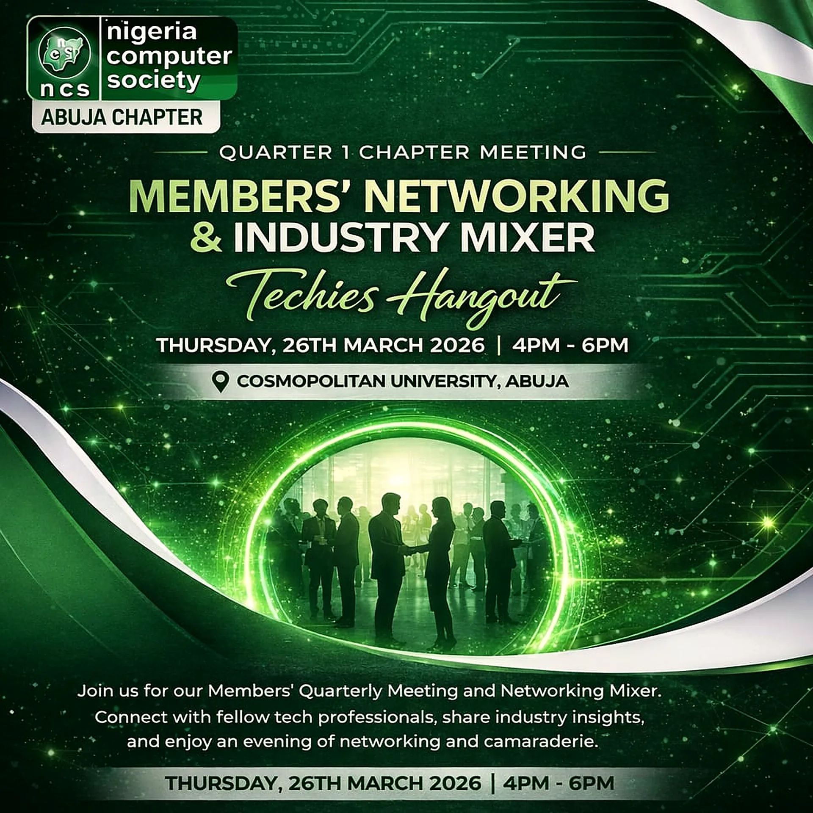

Advancing Nigeria’s computing profession from the capital.
IT professionals, government, industry and academia in the FCT, working together to raise standards, shape digital policy and grow the next generation of technology talent.
RISE 2026 International Conference20th International Conference on Technology and Computing
1 / 5
The professional home for Abuja’s technology community.
The Nigeria Computer Society is the umbrella organisation for information technology professionals, interest groups and stakeholders in Nigeria. It was founded in 1978 as the Computer Association of Nigeria (COAN) and became NCS in 2002.
The Abuja Chapter carries that national mission into the Federal Capital Territory, where policy, institutions and innovation meet.
Our mission
Advance and promote computing and IT education and practice for the benefit of all.
Our objective
Develop competent, ethical computer and information professionals for Nigeria.
A place to learn, contribute and find your people, whichever part of the technology ecosystem you work in.
Professional development
Practical learning, masterclasses and certification pathways that keep skills current.
Policy and government
Professional insight for the decisions shaping Nigeria’s digital future.
Business and industry
Relationships, collaborators and routes to market for technology solutions.
Innovation and startups
Mentorship and connections across Abuja’s innovation community.
Academia and talent
Links between campuses, research and the needs of industry.
Ethics and standards
Upholding the Society’s Code of Conduct and Code of Practice.
A monthly rhythm for members
Four recurring sessions keep the community active between the big events.
First week
Policy Monday
Short, focused conversations on the policies shaping our digital future.
Second week
Member Masterclass
Practical skills, led by members who do the work every day.
Third week
Industry Connect
Matching real industry needs with local professional expertise.
Fourth week
Techies’ Hangout
The chapter’s flagship meetup for networking and opportunity.

Techies’ Hangout
The quarterly members’ networking and industry mixer brings together tech professionals, innovators and enthusiasts for an evening of conversation, knowledge sharing and collaboration.
The first 2026 edition took place on 26 March at Cosmopolitan University, Abuja.
Andrew Agbo Abu is a chartered technology professional, policy and innovation advocate, ecosystem builder and entrepreneur, known for connecting young people, startups, government and industry.
He founded Young Innovators of Nigeria (YIN), served as the chapter’s Director of Innovation and Strategy from 2023 to 2025, and is a Member of the Computer Professionals (Registration) Council of Nigeria (CPN).